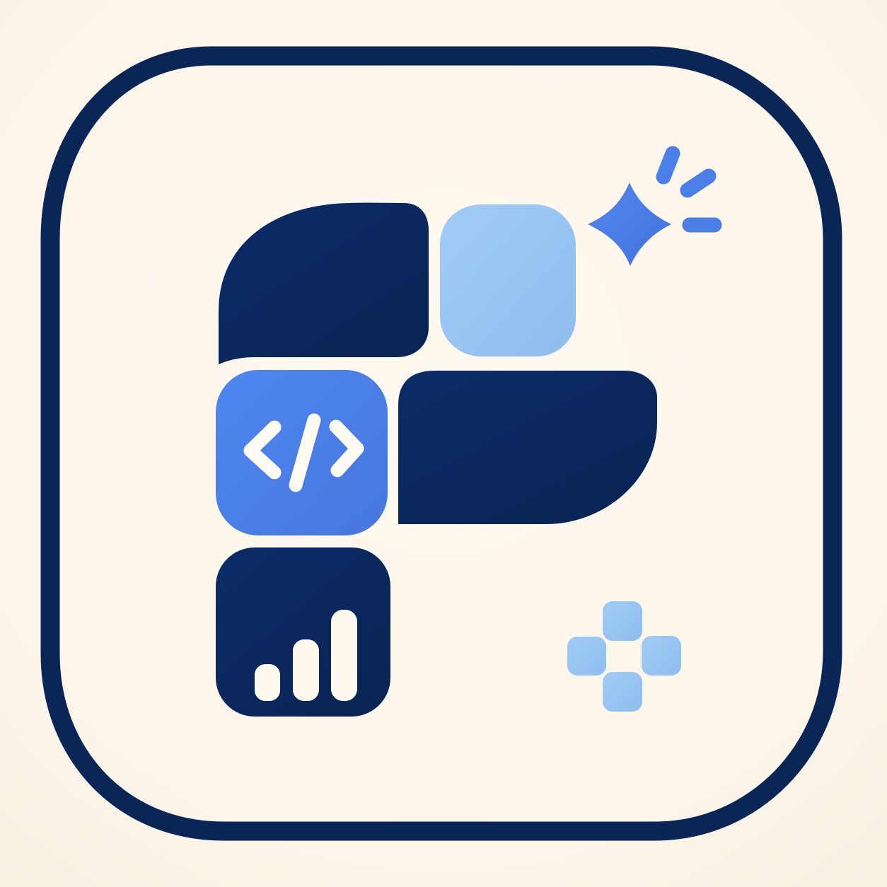
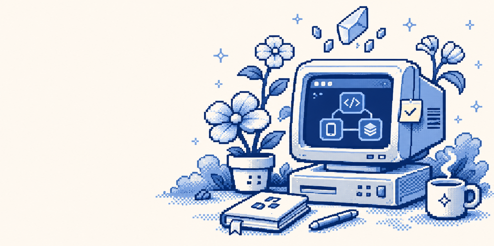

Una plataforma para transformar ideas en software real y comprobar el aprendizaje mediante cambios prácticos.

Del problema a una propuesta viable.
Evaluar y mejorar cada versión.
Modificar y restaurar en vivo.